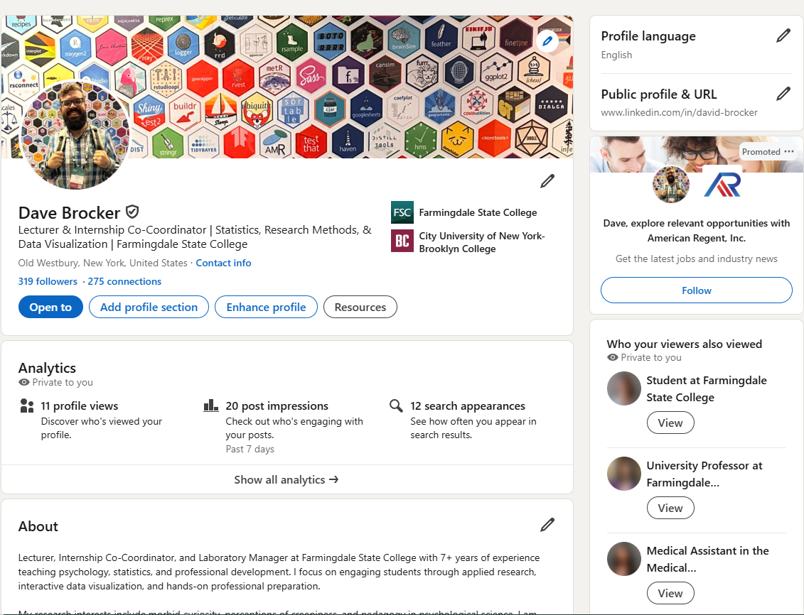
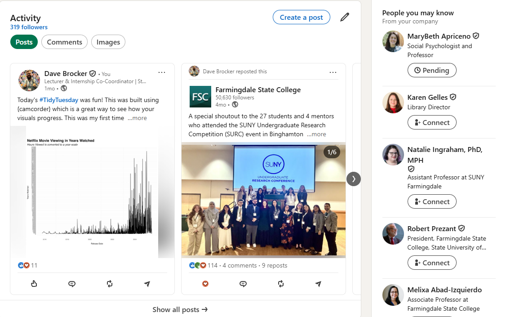
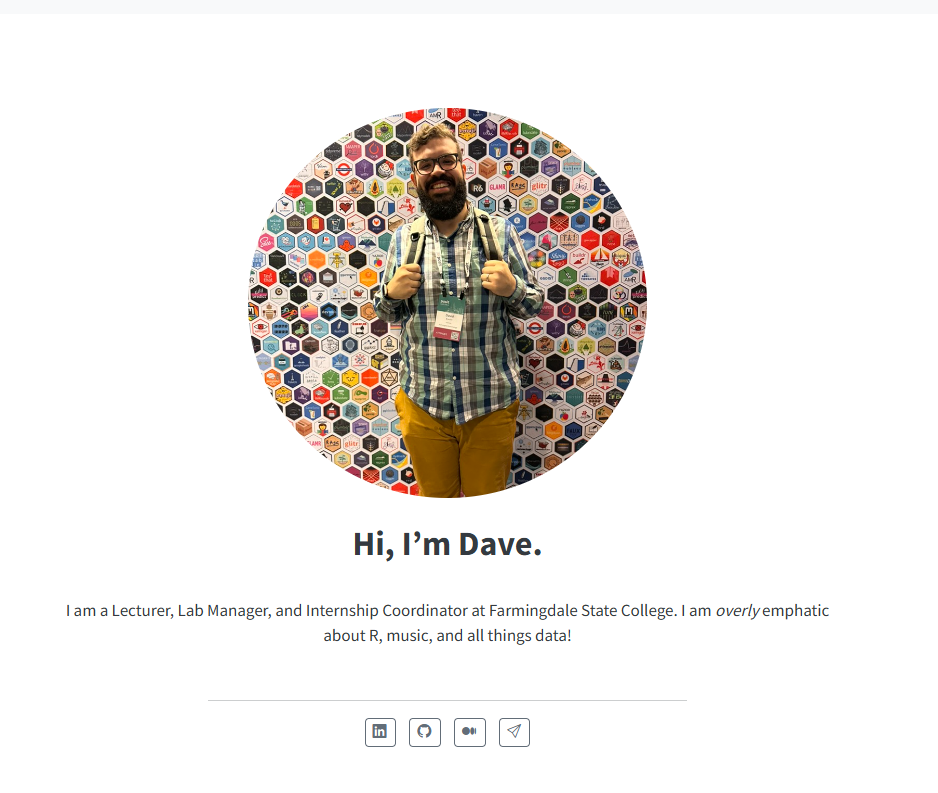

Personal Branding
What is it and (why) does it matter?
PSY 442 Senior Project I Dave Brocker
Identify what you can bring to a team or organization.
Statement first — call it out — then the logo.
01
To organize the world’s information and make it universally accessible and useful.
02
To make all athletes better through passion, design and the relentless pursuit of innovation.
Nike
03
To inspire and nurture the human spirit — one person, one cup and one neighborhood at a time.
Starbucks
04
To refresh the world and make a difference.
Coca-Cola
05
To be a company that inspires and fulfills your curiosity.
Sony
06
We save people money so they can live better.
Walmart
Using the same frame those companies used:
Then compress it to one line.
Worked example — my brand, DataVizWithDave:
To turn curiosity into data — and data into insight and action.
Purpose
Vision
Goals
Unique Attributes
Sound familiar? This is the same frame you used for your mission statement.
The market is saturated with individuals possessing the same relative skills.
Be Approachable
What do you know!
Be the person people go-to
Accept and Offer Feedback
Produce High Quality Work
Leaders in your Field
Past Bosses
Coworkers
Groups in your Field
Being an active member of your field makes your presence noted, and more frequent.
Be yourself
Have a sense of humor
Be dependable
Speak well
Dress well
Remember names
R.I.P
Uh Oh.
Score: 4 / 15



A living home for your work — where you control the whole brand.
Live example — my own: davidabrocker.com · DataVizWithDave
PSY 442 — Senior Project I